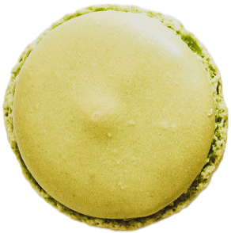

Macamacarons-マカマカロンズ-とは
北海道 札幌市で生まれた本格的なのに
まったく新しい新感覚のマカロン専門店です。
一度食べたら病みつきに…そんな忘れられない体験を一度味わってみませんか？
自分へのご褒美だけではなく、ご友人やご家族様へのプレゼントとしても喜ばれる一品です。
Macamacaronsのこだわり

Wander
Pic up
-

ピスタチオ
イタリア産の希少なピスタチオを贅沢に使用、濃厚な味わいを堪能いただけます
-

シトロン
瀬戸内海レモンクリームにレモンピューレも加え、さわやかさに拍車をかけています
-

ストロベリー
あまおういちごのいちご本来の香りと甘み、そして酸味をお楽しみいただけます
-

ラベンダー
富良野のラベンダージャムを織り交ぜており、大人な風味を味わえます
-

ショコラ
当店No.1商品でベルギーチョコを使用して大人から子どもまで楽しめる逸品です
-

バニラ
香り豊かなバニラビーンズをふんだんに使用した、定番のお味です
-

フランボワーズ
スイス産フランボワーズの甘酸っぱくさわやかな香りがお口いっぱいに広がります
-

抹茶
宇治抹茶の香り豊かな和の味わいを、余すところなくお楽しみいただけます
商品一覧はこちら


Shop
Contact
商品に関する取材依頼、
お問い合わせ、要望はこちら
お問い合わせはこちら